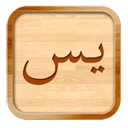

Yasiin dan Tahlil
Versi 1.0
Deskripsi
Didedikasikan kepada:
H. Muchsin, Hj. Hadijah, Hj. Salmah, Hj. Siti Muti'ah, Hj. Zainab, K.H. Said, Khasanadi, Siti Chumaiyah, Siti Rohmah, Susilowati, Sutoharjo, Waginem.
Dikembangkan Oleh:
Lia Nur Enis Ratna Wijayanti
Miftakhul Ulum Syaifulloh
Hikmatuz Zakiyah
Mahfuz
Ibnu Zauji Muhlish
Kode Sumber @Github
Hak Cipta © Pendidikan Teknik Informatika
Offering C 2010, Universitas Negeri Malang.